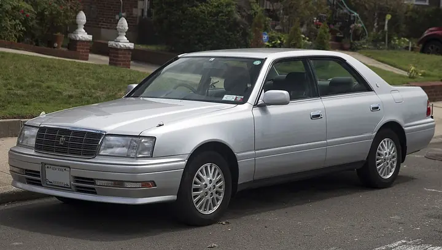
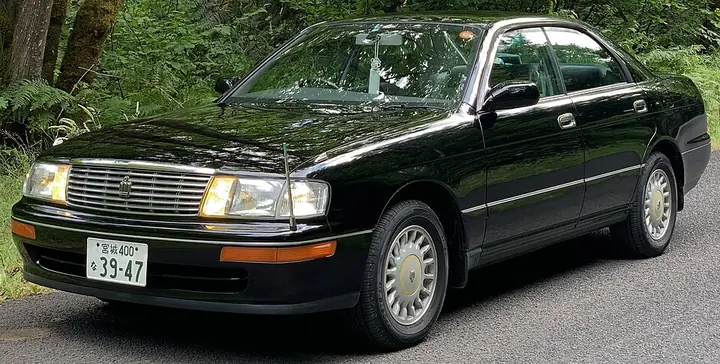
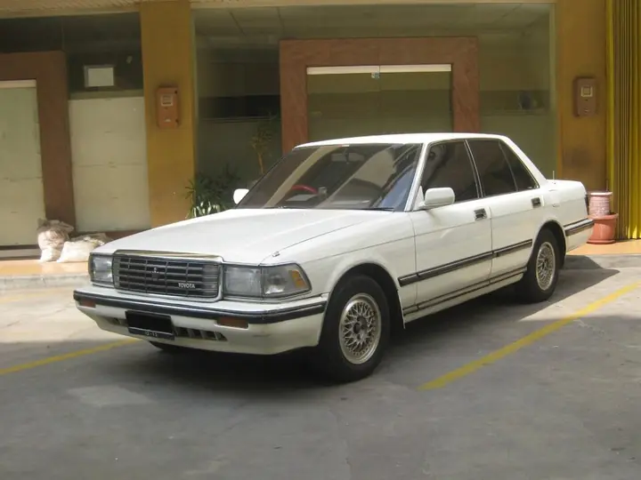
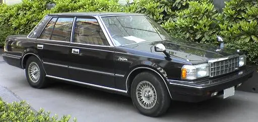
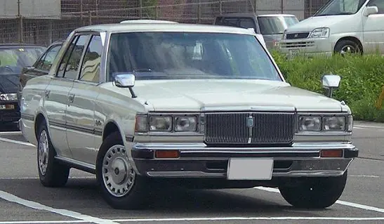
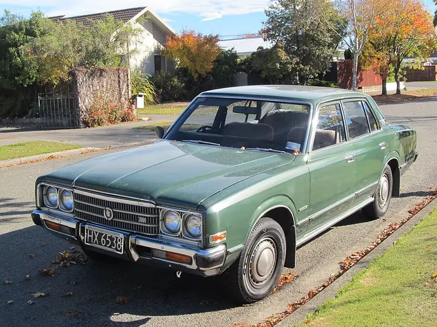
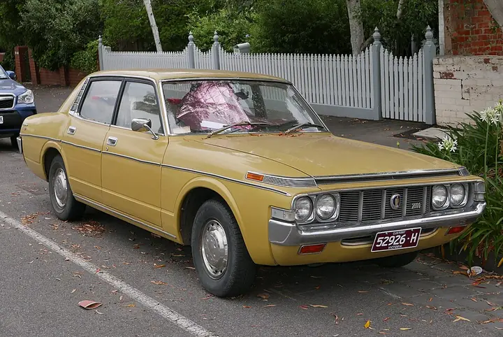
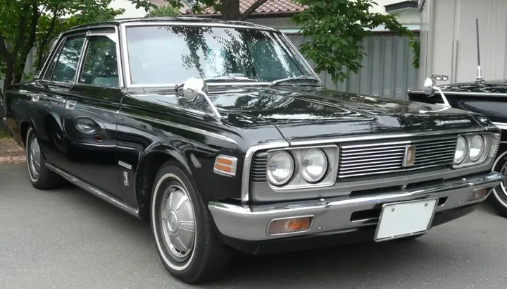
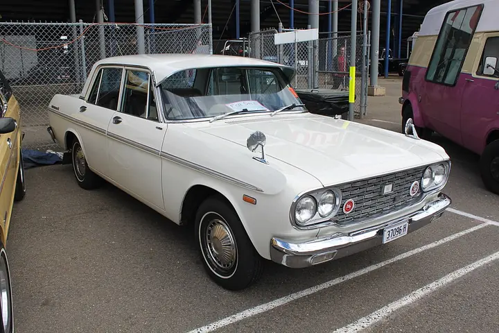
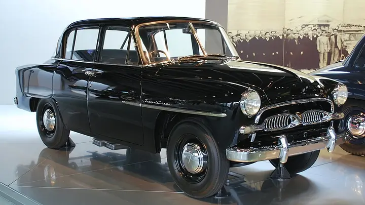

Toyota Crown
Twelfth generation (S180; 2003) · 2003–2009
Abstract
This generation of the Toyota Crown was built 2003–2008 in Japan:, Toyota, Aichi (Motomachi plant), Tahara, Aichi (Tahara plant) and other plants. Body styles: 4-door sedan. Layout: Front-engine, rear-wheel-drive.

_China_(29)_(cropped).jpg){kind=link}
1Specifications
| Production | 2003–20082005–2009 (China) |
|---|---|
| Assembly | Japan:Toyota, Aichi (Motomachi plant)Tahara, Aichi (Tahara plant)China: Tianjin (TFTM) |
| Body style | 4-door sedan |
| Layout | Front-engine, rear-wheel-driveFront-engine, four-wheel-drive |
| Platform | Toyota N platform |
| Engine | 2.5 L 4GR-FSE V62.5 L 5GR-FE V6 (China)3.0 L 3GR-FSE V63.0 L 3GR-FE V6 (China)3.5 L 2GR-FSE V6 |
| Transmission | 5-speed automatic6-speed automatic |
| Wheelbase | 2850 mm |
| Length | 4855 mm |
| Width | 1780 mm |
| Height | 1470 mm |
| Weight | 1620-1700 kg |
| Related | Toyota Crown Majesta (S180)Lexus GS (S190) |
2Previous generations




.jpg){kind=link}







.jpg){kind=link}

_SE_sedan_(2015-12-07)_01.jpg){kind=link}



_sedan_(15696855227).jpg){kind=link}


3Generation by generation
Length +13% from the first to the last
Toyopet Crown – First generation… 19554,285 mm
Toyopet Crown – Second… 19624,610 mm
Toyopet Crown – Third generation… 19674,665 mm
S60 19714,680 mm
S80 19744,765 mm
S110 19794,860 mm
S120 19834,860 mm
S130 19874,690 mm
S140 19914,800 mm
S150 19954,820 mm
S170 19994,820 mm
S180 20034,855 mm
Weight +41% from the first to the last
Toyopet Crown – First generation… 19551,152 kg
Toyopet Crown – Second… 19621,265 kg
Toyopet Crown – Third generation… 19671,305 kg
S60 19711,290 kg
S80 19741,470 kg
S110 19791,500 kg
S120 19831,410 kg
S130 19871,330 kg
S140 19911,620 kg
S180 20031,620 kg